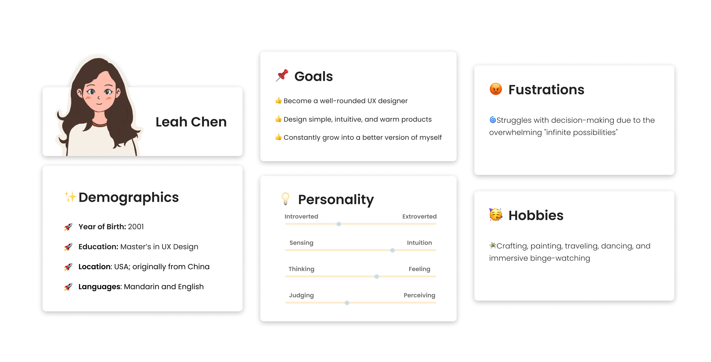
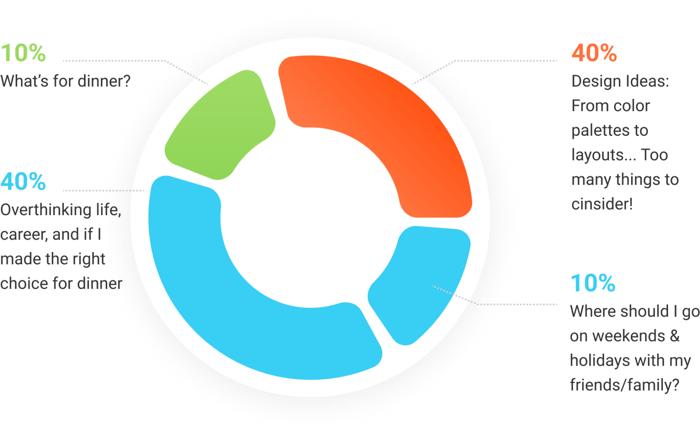
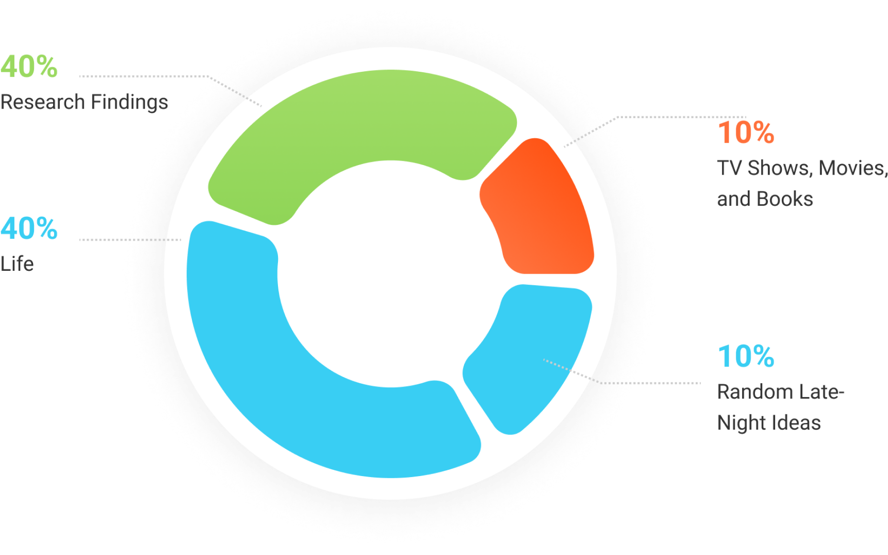

Getting to Know Me as a "User"
I spend most of my time researching users, analyzing their needs, and crafting better experiences. But have I ever thought about myself as a "user"? This time, I decided to turn the tables and apply the tools of my trade to study... me!
I hope this experiment not only helps you get to know me better but also inspires a few ideas of your own;-)
My Persona
Mini “Interview”
Q1: What does design mean to you?A: The ultimate goal of design is to make life better. To me, design is about creating meaningful, human-centered experiences that connect with people on both functional and emotional level.
Q2: What are you most proud of yourself?A: I’m proud of my ability to empathize and connect deeply with others. I can easily sense people’s emotions and perspectives, which often helps me offer support when needed. At the same time, I’m proud of my determination—I have a quiet persistence that drives me to work toward my goals.
Q3: If you weren’t a designer, what would you do?A: I might open a coffee shop or a bookstore. In the space, I want to display my handmade works and tourist souvenirs collected from places I’ve traveled to. I like the handworks, it helps me explore my creativity beyond the digital realm.
“Research Findings”
What’s on my mind
Sources of Design Inspiration
As a designer, my values are...
🌱 Seek Learning and Personal Growth
I always want to try something new, expand my knowledge, and pursue personal growth - I like to learn about the nature and logic of things, and I'm open to developing new hobbies.
🎨 Explore My Creativity
believe that design is about turning imagination into reality and meeting the needs of users with innovative solutions. Innovation and inspiration are the most precious things in creative work, I always cherish my inspiration and try to grasp them.
💭 Be Full of Empathy
I think there is no right or wrong way to feel, and understanding others’ feelings helps me see the world more deeply. I always try to leverage my empathy to see things from a different perspective, which helps me to create user-friendly products.